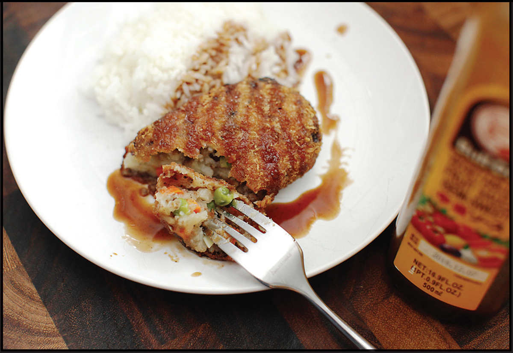

KOROKKE (JAPANESE POTATO CROQUETTES)
Like tempura and katsu, korokke is yet another popular Japanese food that was introduced from another culture and has kept its name. Korokke (pronounced “ko-roh-keh”) comes from the French croquette, and like French croquettes or Spanish croquetas, it consists of a soft filling—most often mashed potatoes—coated in bread crumbs and deep-fried. Korokke are larger than your average croquette: fat oblong disks about the size of an old Nokia brick phone.
Frequently, folks will fold ground meat or vegetables into the potato mixture. My mom used them as a way to incorporate whatever vegetables she had kicking around the freezer or vegetable drawer. She’d generally start by sautéing a bit of onion and ground beef (from the same bulk packs that she’d use for gyoza filling, mapo tofu, and spaghetti with meat sauce), which she would drain and fold into some coarsely mashed potatoes. If there was frozen corn, peas, or spinach in the freezer, there’s a good chance some of them would end up in the croquettes, as would diced carrots, canned tuna, frozen broccoli, leftover rotisserie chicken, or ham. Occasionally we’d be surprised by a gooey pocket of grated cheese. My older sister, Aya, insists that my mom stuck chicken livers in them once. I don’t remember that, but I’d believe it if those livers were on sale.
They can be served hot, but are just as frequently served cold. They can be eaten with a fork and knife on a plate, packed into a box and eaten from a napkin during a long car ride, or bought from the 7-Eleven display case tucked in between two slices of soft white bread. (Yes, that’s potato, bread crumbs, and bread for some sweet carb on carb on carb action with each bite.)

Just about the only universals for korokke are that they are coated in a golden crust of panko-style bread crumbs and drizzled with sweet and salty tonkatsu sauce.
In fact, I almost feel silly giving a recipe for korokke, because as far as I’m concerned, they are the least prescriptive thing out there. There are only three real rules when it comes to adding stuff to korroke:
•Make sure the add-ins are cooked. The croquettes will heat up as they fry, but uncooked vegetables and meat will not reliably cook through. This means sautéing any raw meat and blanching or sautéing vegetables. (Frozen vegetables are typically preblanched and thus don’t need to be cooked separately before being added.)
•Don’t add anything too wet. Wet ingredients will cause the korokke to build up steam inside. If it’s bad enough, the steam build-up will pop a hole in the crust and fat will leak inside, turning them greasy soft. Drain sautéed or blanched vegetables well, and either cook ground meat until all the liquid has evaporated or drain before incorporating.
•Make sure there’s enough potato to bind everything together. Whatever you decide to add to korokke, they need to be able to hold their shape easily before you bread and fry them, which means they should comprise at least 50 percent potato.
We always had a box of Idahoan or Hungry Jack in the pantry, though I rarely remember eating instant mashed potatoes growing up. It was just this past year, at forty-one years old, that I discovered what those dehydrated mashed potato flakes were doing there: My mom used them to thicken up korokke filling if she accidentally made it too wet or did not have enough real potatoes to bind everything together. The trick works really well!*
*And for what it’s worth, I maintain that instant mashed potatoes are among the best convenience foods out there—provided you rehydrate them with equal parts milk and butter and load them up with plenty of salt and pepper.